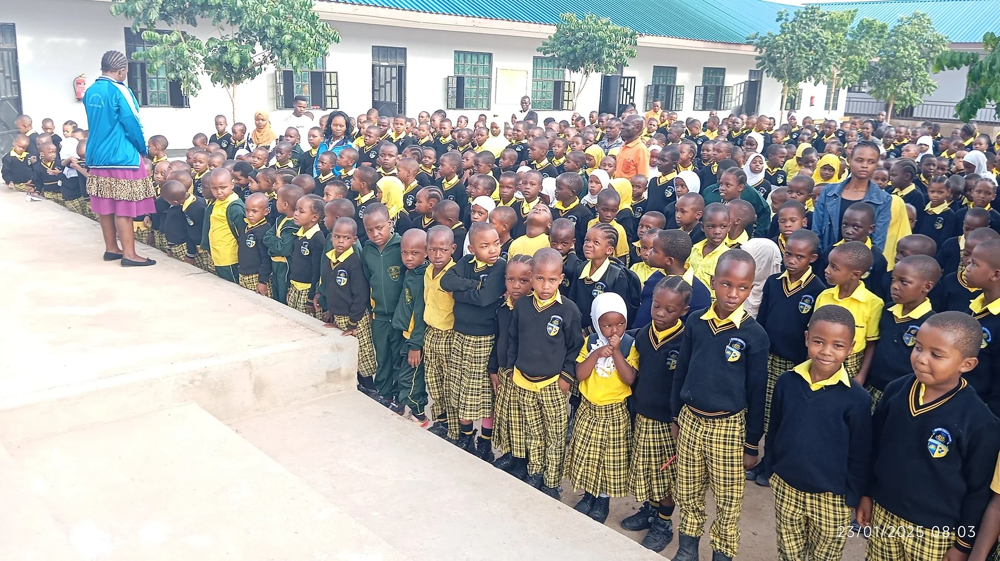

Standard One–Four
Lower Primary
A strong foundation in literacy, numeracy, communication, curiosity, study habits, and confidence. Standard Four pupils are prepared carefully for SFNA.
Learning designed to help pupils build knowledge, confidence, discipline, good character, and readiness for the future.

Glisten Pre and Primary School serves Standard One to Standard Seven. Pupils are guided step by step to understand concepts, practise consistently, build confidence, and prepare responsibly for assessments and future learning.
Academic growth
Guided learning and regular practice support steady pupil progress.
Character growth
Learning is supported by discipline, responsibility, respect, and care.
Future preparation
Pupils build confidence, strong habits, and examination readiness.
A strong foundation in literacy, numeracy, communication, curiosity, study habits, and confidence. Standard Four pupils are prepared carefully for SFNA.
Deeper subject understanding, disciplined practice, responsibility, leadership, and focused preparation for Standard Seven PSLE.
Academic success grows stronger when pupils also develop confidence, responsibility, cooperation, and creativity.
Clear explanation and guided practice help pupils build meaningful knowledge.
Consistent routines and responsibility support learning and good behaviour.
Pupils are encouraged to participate, ask questions, and believe in progress.
Assessment, feedback, and practice help pupils prepare for the next stage.
Open official Standard Four and Standard Seven result links by year.
Contact us for admission guidance, academic information, or a school visit.